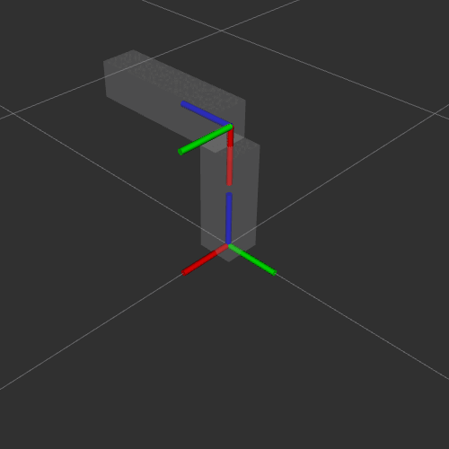

Robótica
Clase 08
Semana 9 - 12/05/2025
URDF: Unified Robot Definition Format
- Permite describir geometría y características del robot
- Formato
XML: La información se representa a través de etiquetas anidadas
Etiquetas principales:
<robot>,<link>,<joint>
URDF: 2 Elementos fundamentales
- Eslabones:
<link>
- Juntas:
<joint>
Link 
Joint 
URDF: links y joints
Muy importante
Identificar de forma conveniente como dividir la estructura física del robot en links y joints
- Una parte que se mueve relativa a otra
- Una parte que no se mueve pero es conveniente conocer su marco de referencia
- Cadena de transformaciones para los casos anteriores
Etiqueta <robot>..<\robot>
- Etiqueta raíz (todo el contenido se encuentra dentro)
- 1 solo atributo: el nombre
Etiqueta <link>..</link>
- 1 solo atributo: el nombre
Por convención el nombre tiene sufijo ‘_link’
Etiqueta <link>..</link>
Geometría visual
<visual>..</visual>
Etiqueta <link>..</link>
Geometría visual
<visual>..</visual>
- Origen:
- Material:
- Geometría: cilindro
Etiqueta <link>..</link>
Etiqueta <link>..</link>
Geometría visual
<visual>..</visual>
- Origen:
- Material:
- Geometría: malla
Etiqueta <link>..</link>
Geometría para simulación
<collision>..</collision>
Etiqueta <joint>..</joint>
- 2 atributos: el nombre y tipo
Por convención el nombre tiene sufijo ‘_joint’
Tipos de juntas
Tipos de juntas
Tipos de juntas
- Fija (
fixed) - Continua (
continuous) - Revolución (
revolute)
3 elementos:
<origin .. />
<axis ../>y<limit ../>

Tipos de juntas
- Fija (
fixed) - Continua (
continuous) - Revolución (
revolute) - Prismática (
prismatic)
XACRO: Macros en XML
- Facilita la codificación de URDF
- Herramienta para dividir código y evitar duplicar
- Provee estructuras de ‘programacion’
XACRO: Macros en XML
Se necesita un paso de compilación:
$ xacro description.urdf.xacro

Actualizar dependencias: <exec_depend>xacro</exec_depend>
Partición de los componentes
Ejemplos:
- La geometría principal (links y joints)
- Materiales
- Sensores
- Simulador (y parámetros de simulación)
- Macros
Inclusión de archivos
- Archivo principal:
- se lo nombre con extensión ‘
.urdf.xacro’ - contiene el tag
robotcon nombre
- se lo nombre con extensión ‘
- Archivos incluidos:
- extensión ‘
.xacro’ - solo contienen el tag
robot(sin nombre)
- extensión ‘
Se incluyen las partes mediante el tag <xacro:include .. />
Ejemplo xacro:include
Parametrización de atributos
- Operaciones matemáticas:
${..} - Propiedades
xacro:property: Nombre y valor
<?xml version="1.0"?>
<robot name="MyBot" ...>
<xacro:property name="diametro" value="2.1" />
<xacro:property name="ancho" value="4.5" />
<xacro:property name="alpha" value="${30/180*pi}" />
...
<geometry type="cylinder"
radius="${diametro / 2}" length="${ancho}" />
...
<origin xyz="0 0 0" rpy="0 0 ${alpha}" />
...
</robot>Comandos de rospack
- Argumentos
xacro:args: Nombre y valor por defecto
Bloques condicionales
- Etiqueta
xacro:ifparatrueyxacro:unlessparafalse
Macros
- Porciones de código a reutilizar (plantillas)
xacro:macro: Nombre y parámetros a recibir
macro.xacro
<xacro:macro name="rueda_esferica"
params="prefijo link_padre radio
pos_x:=0 pos_y:=0 pos_z:=0">
<xacro:property name="nombre_link"
value="${prefijo}_link" />
<link name="${nombre_link}">
<visual>
<geometry>
<sphere radius="${radio}" />
</geometry>
<material name="black" />
</visual>
...
</link>
<joint name="${prefijo}_joint" type="fixed">
<parent link="${link_padre}$"/>
<child link="${nombre_link}"/>
<origin xyz="${pos_x} ${pos_y} ${pos_z}"
rpy="0 0 0"/>
</joint>
</xacro:macro>Resultado:
Similitudes entre
URDF |
|
|
|---|---|---|
| arbol de .. | arbol de .. | |
links |
frames |
|
| conectados por .. | conectados por .. | |
joints |
transforms |
Tip
Interpretando los links y joints del robot description puedo publicar los frames y tf correspondientes
Paquete robot_state_publisher
- Descripción del robot ➡️
/robot_description - Juntas fijas (transformaciones estáticas) ➡️
/tf_static - Juntas móviles ➡️
/joint_states➡️ transformaciones dinámicas ➡️/tf

Topic /joint_states
- Listado de juntas con sus respectivos estados:
sensor_msgs/JointState
├── std_msgs/Header header
├── string[] name
├── float64[] position
├── float64[] velocity
└── float64[] effortQuién publica en el /joint_states?

Sistema completo

URDF + XACRO + robot_state_publisher + joint_state_publisher_gui
Comandos de cada paquete
robot_state_publisher
$ ros2 run robot_state_publisher robot_state_publisher
--ros-args -p robot_description:='<robot_description>'joint_state_publisher_gui
$ ros2 run joint_state_publisher_gui joint_state_publisher_guiTaller de resolución
Ejercicios 1 y 2
Robótica - TUAR - FICH - UNL